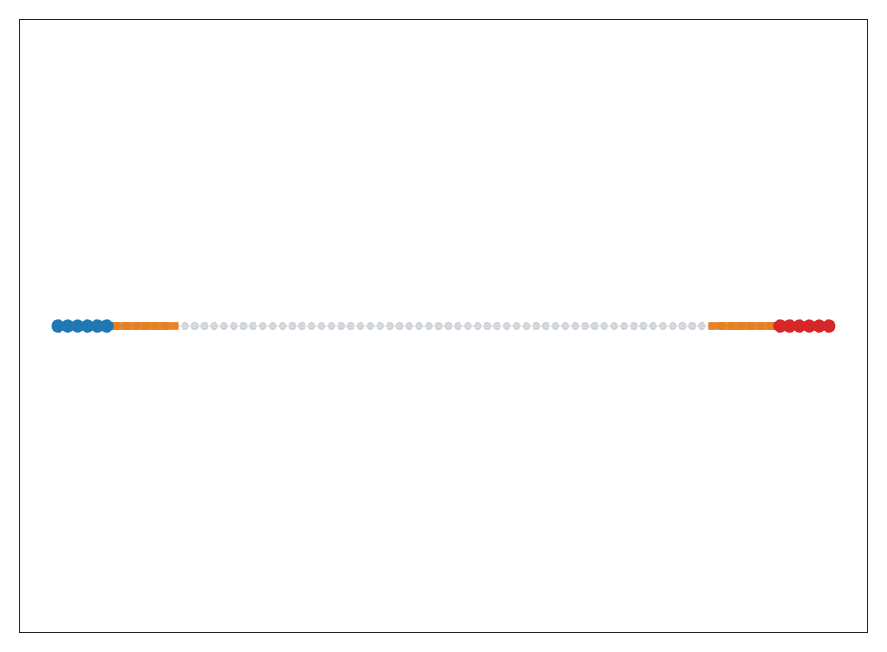

Provides a machine-checked Lean formalization of the convergence-rate blueprint and its graph Wasserstein-1 instantiation.
Abstract
Entropic regularization provides a simple way to approximate linear programs whose constraints split into two or more tractable blocks. The resulting objectives are amenable to cyclic Kullback-Leibler (KL) Bregman projections, with Sinkhorn-type algorithms for optimal transport, matrix scaling, and barycenters as canonical examples. This paper gives a general blueprint for proving $O(1/k)$ dual convergence rate with a constant that scales only linearly in $1/γ$, where $γ$ is the entropic regularization parameter. We call such rates "robust", because this mild dependence on $γ$ underpins favorable complexity bounds for approximating the unregularized problem via alternating KL projections. The blueprint reduces the proof to a uniform primal bound and a dual bound for a quotient norm induced by the constraint split. To make these inputs usable, we propose two helper results, which rely on the non-expansiveness of the dual iterations in this quotient dual norm. Instantiating this blueprint for graph-structured transport yields a new flow-Sinkhorn algorithm for the Wasserstein-1 distance on graphs. It achieves $\varepsilon$-additive accuracy on the transshipment cost in $O(p\,\mathrm{diameter}^3/\varepsilon^{4})$ arithmetic operations (up to logarithmic factors), where $p$ is the number of edges. We also provide a machine-checked Lean formalization of the core blueprint and its graph-$\mathrm{W}_1$ instantiation.
Problem
Iterative Bregman projections (Sinkhorn-type algorithms) are widely used for entropy-regularized constrained optimization, but existing convergence rate analyses often have poor dependence on the regularization parameter, limiting their use for approximating unregularized problems.
Approach
The paper provides a general blueprint for proving O(1/k) dual convergence rates with constants scaling only linearly in 1/gamma, where gamma is the entropic regularization parameter. The blueprint reduces the proof to a uniform primal bound and a dual bound for a quotient norm induced by the constraint split, using non-expansiveness of dual iterations. This is instantiated for graph-structured transport via a new flow-Sinkhorn algorithm for Wasserstein-1 on graphs. A machine-checked Lean formalization of the core blueprint and its graph-W1 instantiation is provided.
Results
The flow-Sinkhorn algorithm achieves epsilon-additive accuracy on transshipment cost in O(p * diameter^3 / epsilon^4) arithmetic operations (up to log factors), where p is the number of edges. GPU benchmarks demonstrate practical performance on line graphs, planar Delaunay graphs, and single-cell graphs.

Figure 2 : Top row: benched graph together with the flow f (line graph, planar Delaunay, single cell). Bottom row: \ell^{2} error \|f^{(s)}-f^{\star}\|_{2}/\|f^{\star}\|_{2} , against wall-clock time. Flow Sinkhorn is plain and vanilla Sinkhorn is dashed; colors encode \gamma from blue (small) to red (large). Gamma ranges are: line (flow \gamma\in[10^{-3},5] , vanilla \gamma\in[10^{-1},1] ), Delau